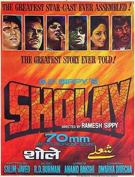

Sholay (1975)
ActionAdventureDrama
Two small-time crooks, a fearsome dacoit, and one of Hindi cinema’s most quoted screenplays — Sholay basically wrote the rulebook for the Bollywood action-drama.
Famous dialogues
- “Kitne aadmi the? (How many men were there?)”
- “Arre o Sambha, kitna inaam rakhe hai sarkar hum par?”
- “Yeh haath humko de de, Thakur!”
- “Jo darr gaya, samjho marr gaya.”
- “Tera kya hoga, Kaalia?”
- “Basanti, in kutto ke samne mat nachna.”
- “Chal Dhanno, aaj teri Basanti ki izzat ka sawaal hai!”
- “Holi kab hai? Kab hai Holi, kab?”
- “Itna sannata kyun hai bhai?”
- “Bahut yaraana lagta hai.”
- “Soowar ke bachcho!”
- “Thakur na jhuk sakta hai na toot sakta hai, Thakur sirf marr sakta hai.”
- “Yeh haath nahi, phansi ka phanda hai.”
- “Sardar, maine aapka namak khaya hai.”
Poster © respective studio/distributor — used under fair use for identification, via Wikipedia.